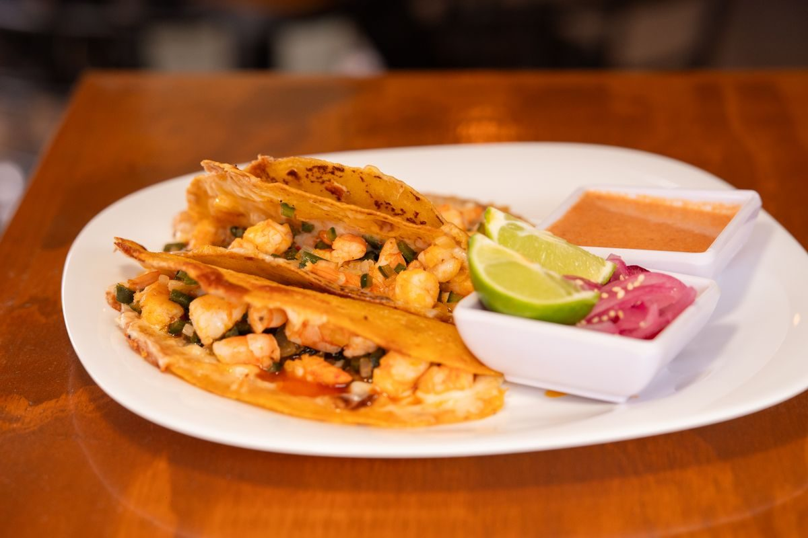

From the truck


Taco truck in Mobile
Smokin' Gringos is Mobile's original taco truck, since 2009, serving tacos, chicken quesadillas, and chips and queso, with catering available.

Smokin' Gringos is a taco truck and caterer in Mobile, based at 10 Springdale Blvd. The truck serves tacos with chicken, pork, Angus brisket, and shrimp, plus chicken quesadillas and chips and queso. The posted window is Friday 11:00 AM to 1:00 PM, and the schedule varies by setup.
10 Springdale Blvd, Mobile, AL
Friday, 11:00 AM to 1:00 PM